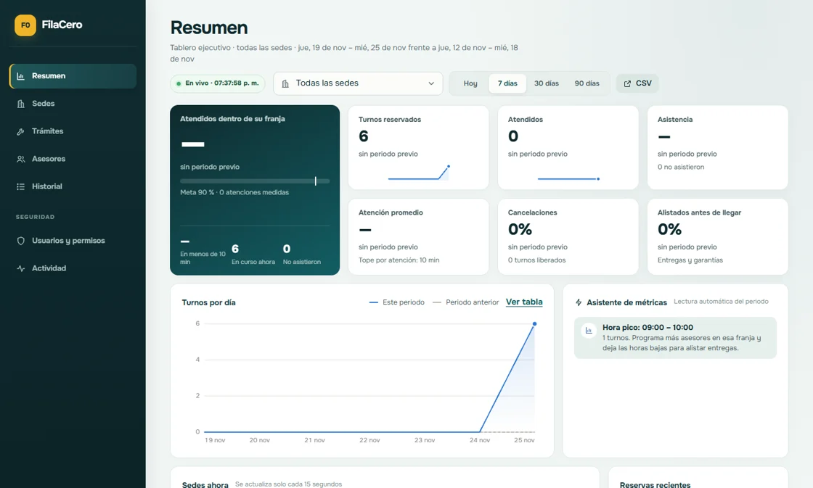

Capacidad
Cómo calcular cupos por franja
Cuenta personas, puestos y equipos de prueba disponibles. El recurso más escaso determina cuántas visitas caben.
Qué observar en la sede
Elige una media hora representativa y cronometra el recurso compartido. Con una mesa y pruebas de diez minutos caben como máximo tres pruebas en treinta minutos, antes de pausas e incidencias. Una segunda persona en caja no aumenta por sí sola ese límite.
Prueba con tu equipo
Si el recurso crítico solo está disponible veinte minutos de cada media hora, recalcula el ejemplo con esos veinte minutos. Anota por separado el tiempo que necesita el asesor para documentar la entrega.

Lectura relacionada: Qué comparar entre sedes.
Solicitar una demo